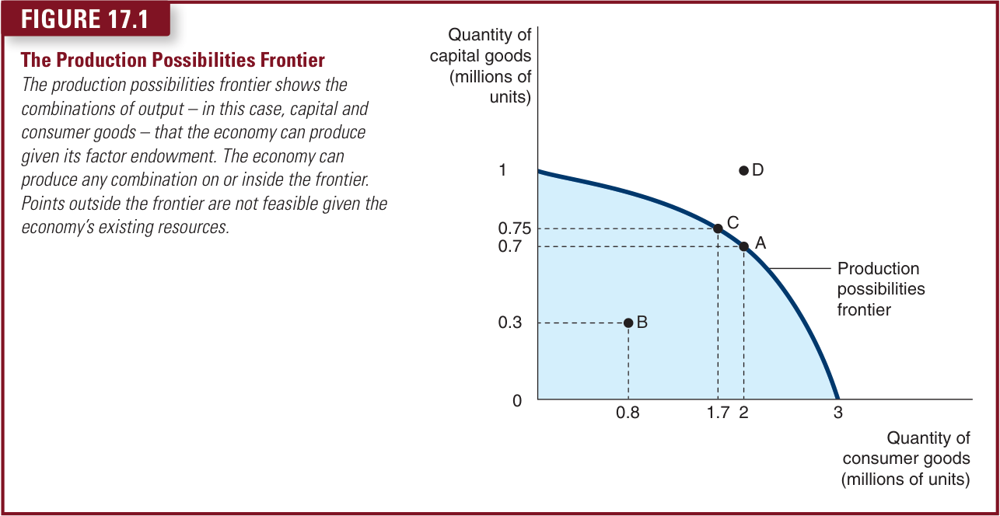
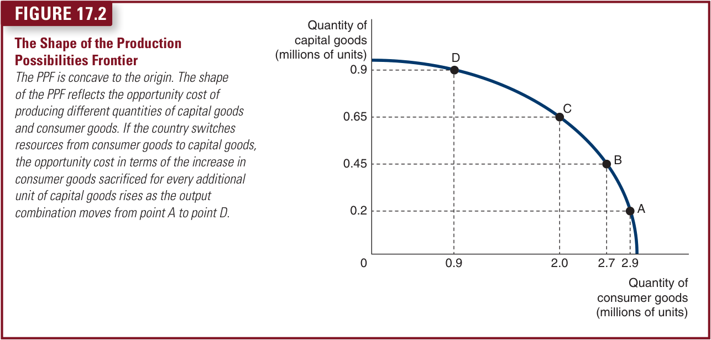
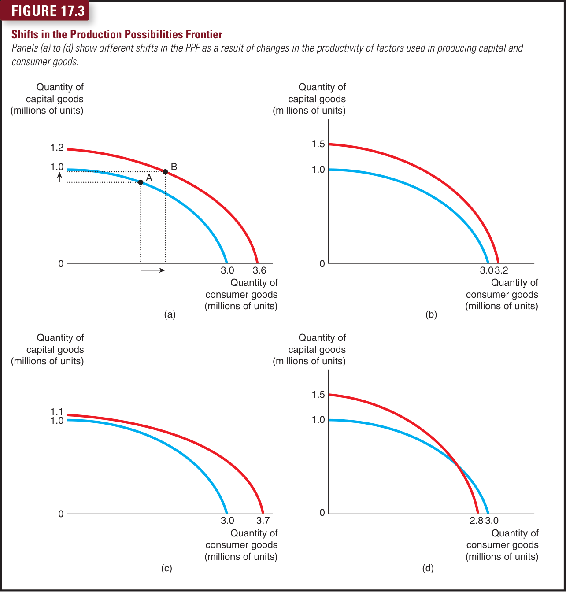
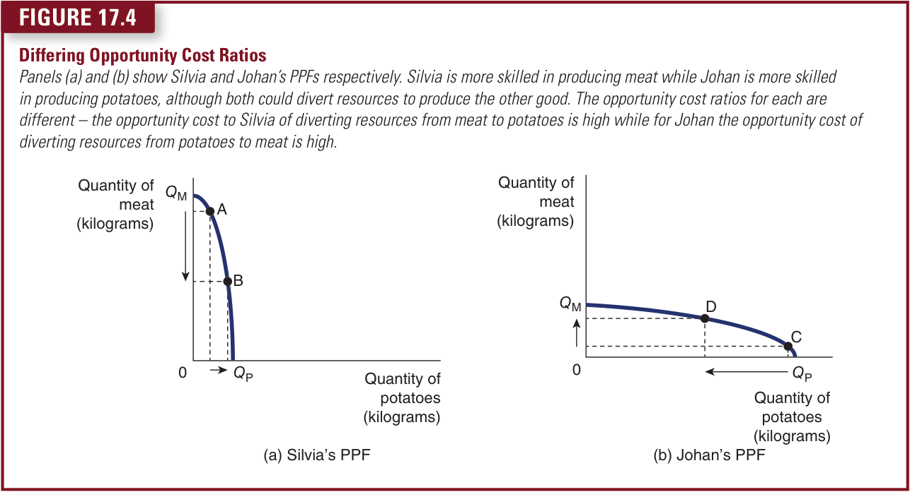
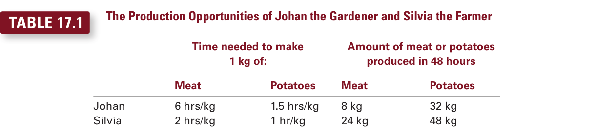
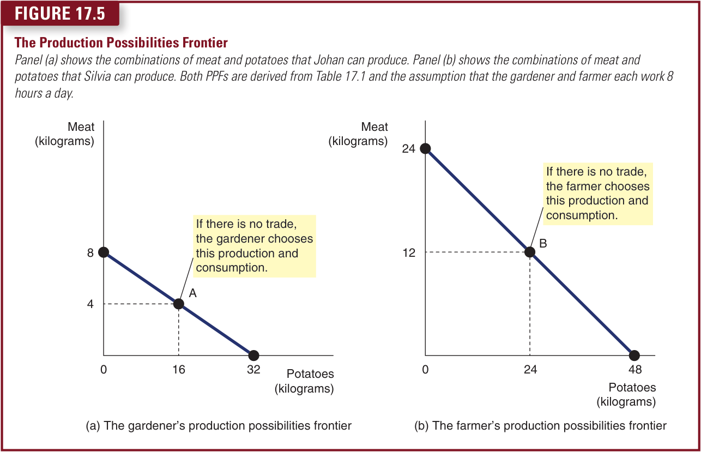
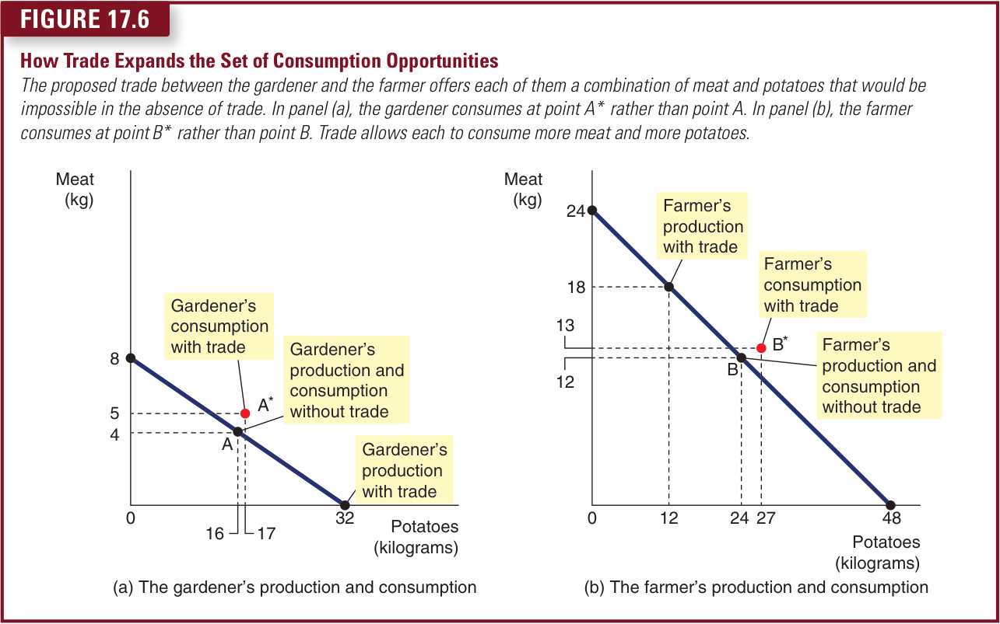
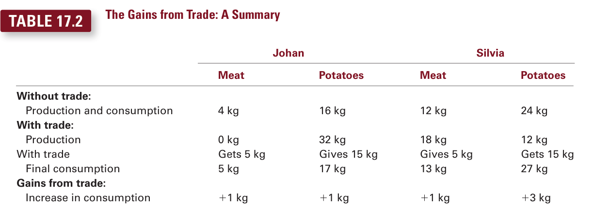
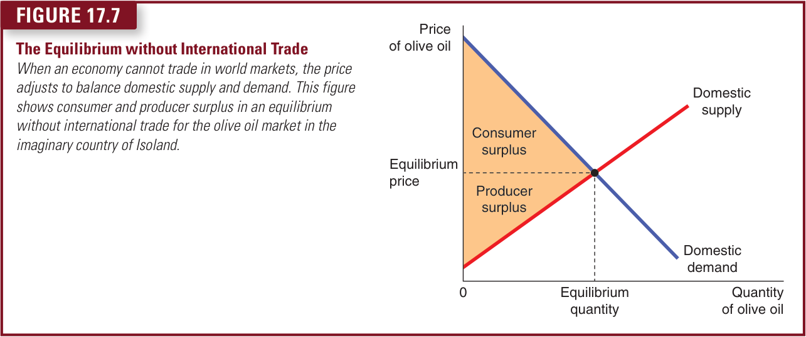

Consider this typical day. You wake up in the morning and make some coffee from beans grown in Kenya, or tea from leaves grown in Sri Lanka. Over breakfast, you listen to a radio programme on a device made in China. You get dressed in clothes manufactured in Thailand. You drive to the university in a car made of parts manufactured in more than a dozen countries around the world. Then you open up your economics textbook published by a company located in Hampshire in the UK, printed on paper made from trees grown in Finland and written by authors from the United States and England.
Every day you rely on many people from around the world, most of whom you do not know, to provide you with the goods and services that you enjoy. Such interdependence is possible because people trade with one another. One of the early insights from economists like Adam Smith and David Ricardo was that trade can be beneficial, and this insight is something that many economists still hold dear. In this chapter we will look at the benefits to trade and at arguments which cast doubt on the extent to which trade benefits everyone.
17.1The Production Possibilities Frontier
We begin our analysis by looking at a model of the economy where no trade takes place and simplified to the production of goods in two categories, capital goods and consumer goods. The country has a certain amount of resources of land, labour and capital available to allocate between the production of these goods which can be shown using a production possibilities frontier (PPF). (You might also see this referred to as a production possibilities boundary or production possibilities curve – they are the same thing.) The production possibilities frontier is a graph that shows the various combinations of output – in this case, capital goods and consumer goods – that the economy can produce given the available factors of production and technology that firms can use to turn these factors into output.
Figure 17.1 is an example of a PPF. In this economy, if all resources were devoted to the production of capital goods, the economy would produce 1 million units of capital goods and no consumption goods. If all resources were used to produce consumer goods, the economy would produce 3 million units and no capital goods. The two end points of the PPF represent these extreme possibilities. If the economy were to divide its resources between the two goods, it could produce 700,000 capital goods and 2 million consumer goods, shown in the figure by point A. The economy can produce at any point on or inside the production possibilities frontier, but it cannot produce at points outside the frontier. The outcome at point D is not possible because the economy does not have enough of the factors of production to support that level of output.

An outcome is said to be efficient if the economy is getting all it can from the scarce resources it has available. Points on the PPF represent efficient levels of production. When the economy is producing at such a point, say point A, there is no way to produce more of one good without producing less of the other. Point B represents an inefficient outcome. For some reason, the economy is producing less than it could from the resources it has available and so some of its resources are lying idle (they are unemployed or underemployed). At point B, the country is producing only 300,000 units of capital goods and 800,000 consumer goods. If the source of the inefficiency were eliminated, the economy could move from point B to point A, increasing production of both capital goods (to 700,000) and consumer goods (to 2 million). The production possibilities frontier illustrates the idea of a trade-off in that once a society has reached the efficient points on the frontier, the only way of getting more of one good is to get less of the other. When the economy moves from point A to point C, for instance, society produces more capital goods but at the expense of producing fewer consumer goods.
17.1.1Opportunity Cost
The PPF can also be used to show opportunity cost. If some factors of production are reallocated from the consumer goods industry to the capital goods industry, moving the economy from point A to point C, for example, it gives up 300,000 consumer goods to get 50,000 additional capital goods. The opportunity cost of the additional 50,000 capital goods gained is the 300,000 consumer goods sacrificed.
17.1.2Calculating Opportunity Costs
Remember that the opportunity cost is the cost expressed in terms of the next best alternative sacrificed – what must be given up in order to acquire something. In the example the country had to give up 300,000 consumer goods to acquire 50,000 additional capital goods. The opportunity cost can be expressed in terms of either capital goods or consumer goods – they are the reciprocal of each other.
As a general principle we can express the opportunity cost as a ratio expressed as the sacrifice of one good in terms of the gain in the other:
Opportunity cost of good y = Sacrifice of good x / Gain in good y
Expressing the opportunity cost in terms of good x would give:
Opportunity cost of good x = Sacrifice of good y / Gain in good x
The opportunity cost of one additional unit of consumer goods or capital goods can be calculated by firstly writing out the known quantities:
The OC of 300,000 consumer goods is 50,000 capital goods.
Divide both quantities by the number of consumer goods:
The OC of 300,000/300,000 consumer goods is 50,000/300,000 capital goods
Now complete the calculation to get the opportunity cost of one additional unit of consumer goods in terms of capital goods sacrificed:
The OC of one consumer good is 0.17 (2dp) capital goods.
This tells us that for every 1 additional unit of consumer goods acquired, we must give up 0.17 of a capital good.
To find the opportunity cost of capital goods in terms of consumer goods, follow the same process but in reverse.
The OC of 50,000 capital goods is 300,000 consumer goods.
The OC of 50,000/50,000 consumer goods is 300,000/50,000 consumer goods
The OC of one capital good is six consumer goods.
17.1.3The Shape of the Production Possibilities Frontier
The PPF in Figure 17.2 is bowed outwards (concave to the origin). This is due to the fact that when economies move resources from one use to another, unless they are perfect substitutes (in which case the PPF would be a straight line), as the rate at which the increase in output of one good increases, the opportunity cost in terms of the other changes. For example, if the economy is using most of its resources to make consumer goods at point A in Figure 17.2, land, labour and capital are being used to make consumer goods even if these resources are not best suited to making these goods. If the country moves from point A to point B, the gain in capital goods is 250,000 units but the sacrifice in consumer goods is 200,000. The opportunity cost of one additional unit of capital goods will be 0.8 consumer goods sacrificed. Resources released from producing consumer goods are now able to produce capital goods, a use to which they may be more appropriately suited. If the economy moves from point B to point C, the gain in capital goods is a further 200,000 units but the sacrifice in terms of consumer goods is now 700,000. The opportunity cost of 1 additional unit of capital goods now is 3.5 consumer goods sacrificed.
If the country continues to shift resources to capital goods from consumer goods, the ease of substitutability of factors becomes weaker and the sacrifice in consumer goods becomes greater. Moving from point C to point D yields an additional 250,000 capital goods but at a cost of 1.1 million units of consumer goods. The opportunity cost of 1 additional unit of capital goods is now 4.4 units of consumer goods. The reason that the opportunity cost in terms of consumer goods is rising is that the resources being put to use producing more capital goods are now less suited to the purpose and so the sacrifice in consumer goods increases.

The PPF illustrates two of the key questions any economy must answer: what is to be produced and how will the output be produced? Most economies could use the resources it has at its disposal in a variety of ways. For example, it is possible that the UK could allocate resources to the production of oranges. Large amounts of land could be set aside for the construction of glasshouses in which the climate, water and nutrition needs of orange trees are controlled by computer technology. In Spain the same amount of oranges could be produced using far fewer resources simply because the climate is more conducive to growing oranges. The opportunity cost of using resources in this way in the UK is likely to be high, therefore.
17.1.4A Shift in the Production Possibilities Frontier
The PPF shows the trade-off between the production of different goods at a given time, but the trade-off can change over time. For example, technological advances can mean that factors of production are considerably more productive in terms of output per unit per time period. Countries might also be in a position to recover or make use of more natural resources, or the effects of education in the country mean the labour force becomes more productive. Over time, therefore, opportunity cost ratios of production change and this can affect the shape and position of the PPF.
Figure 17.3 shows three possible outcomes. In panel (a) the PPF has shifted outwards showing that it is now possible to produce more of both capital goods and consumer goods as indicated by the move to point B. If all resources were devoted to capital goods, the economy could now produce 1.2 million units, and if all resources were devoted to consumer goods, the country could produce 3.6 million units. The relative opportunity cost ratios, however, remain the same because the PPF has shifted outwards, parallel at every point to the original curve. Because of this economic growth, society might move production from point A to point B, enjoying more consumer goods and more capital goods.
Panel (b) shows a shift in the PPF but this time the economic advances in the productivity of the capital goods industry is greater than that of the consumer goods industry. If all resources were now devoted to capital goods production, the country could produce 1.5 million units, and if it devoted all output to consumer goods it could produce 3.2 million units. The opportunity cost ratio at all points on the new PPF will now be different from those on the original PPF.
Panel (c) shows the situation where the economic advances in productivity in the consumer goods industry is greater than in the capital goods industry. In this case, if all resources were devoted to producing consumer goods, the country could now produce 3.7 million units, and if all resources were devoted to producing capital goods, 1.1 million units could be produced.
It may also be possible that productivity in one industry might actually reduce while that in the other rises, in which case the PPF might take the look of that in panel (d) of Figure 17.3. In this case there has been an increase in productivity in the capital goods industry but a reduction in the consumer goods industry.

The PPF simplifies a complex economy to highlight and clarify some basic ideas. We can now extend the analysis to look at how different factor endowments and factor productivity in different countries can lead to countries trading and gaining advantages.
Use the information in Figure 17.3 to calculate the opportunity cost ratios of both capital and consumer goods in each scenario presented in the different panels. Assume, in each case, that the country moves from devoting all its resources to capital goods and then switches to devoting all its resources to consumer goods.
17.2International Trade
Each country has its own PPF and in isolation faces choices about the use of resources to produce goods. If the country wants to increase the amount of goods available to all its citizens, then it can rely on increasing the number of factors it has at its disposal or the efficiency with which its resources are used to shift the PPF outwards. In addition to this, countries might also choose to engage in trade as a means of providing benefits to its citizens and effectively shift the PPF.
17.2.1A Parable for the Modern Economy
We are going to use a simple example to illustrate how trade can lead to benefits. Imagine that there are two goods in the world, beef and potatoes, and two people in the world (our analogy for two different countries), a cattle farmer named Silvia and a market gardener named Johan, each of whom would like to eat both beef and potatoes.
Assume initially that the cattle farmer can produce only meat and the market gardener can produce only potatoes. In one scenario, the farmer and the gardener could choose to have nothing to do with each other. After several months of eating beef roasted, boiled, fried and grilled, the cattle farmer might decide that self-sufficiency is not all she expected. The market gardener, who has been eating potatoes mashed, fried and baked, would most likely agree. It is easy to see that trade would allow them to enjoy greater variety: each could have beef and potatoes.
Now assume that the farmer and the gardener are each capable of producing both goods. In this case each has a PPF analogous to two different countries. Suppose, for example, that the market gardener can rear cattle and produce meat, but that he is not very good at it, and that the cattle farmer is able to grow potatoes, but her land is not very well suited to this crop. The PPF for Johan and Silvia would look like those in Figure 17.4. Panel (a) shows Silvia’s PPF and panel (b) shows Johan’s. Because Silvia is more efficient in the production of meat than she is producing potatoes, the shape of the PPF reflects the opportunity cost of any decision to divert more of her resources away from producing meat to producing potatoes. If Silvia devoted all her time and resources to producing meat, she could produce QM, the vertical intercept. If she makes the decision to divert resources to the production of potatoes, the sacrifice in terms of lost meat output is relatively high compared to the gains in output of potatoes as shown by the move from point A to point B.

Johan’s situation is the reverse of this and is shown in panel (b). If Johan allocates all resources to producing potatoes, he produces QP. If he diverts resources away from potato production towards meat production, he sacrifices a relatively large amount of output of potatoes to gain a relatively small amount of meat as shown by the movement from C to D. The opportunity cost of diverting resources to meat for Johan is high.
Economically, it would be more efficient for Johan and Silvia to cooperate with each other, specialize in what they both do best and benefit from trading with each other at some mutually agreeable rate of exchange. For example, they might agree to a rate of exchange of 1 kg of meat for every 5 kg of potatoes. The gains from trade are less obvious, however, when one person is better at producing every good. For example, suppose that Silvia is better at rearing cattle and better at growing potatoes than Johan. In this case, should the farmer or gardener choose to remain self-sufficient, or is there still reason for them to trade with each other?
17.2.2Production Possibilities
Suppose that Johan and Silvia each work 8 hours a day, 6 days a week (a working week of 48 hours) and take Sunday off. They can spend their time growing potatoes, rearing cattle, or a combination of the two. Table 17.1 shows the amount of time each person takes to produce 1 kg of each good. The gardener can produce 1 kg of meat in 6 hours and 1 kg of potatoes in an hour and a half. The farmer, who is more productive in both activities, can produce a kilogram of meat in 2 hours and a kilogram of potatoes in 1 hour. The last columns in Table 17.1 show the amounts of meat or potatoes the gardener and farmer can produce in a 48-hour working week, producing only that good.

Panel (a) of Figure 17.5 illustrates the amount of meat and potatoes that Johan can produce. If he devotes all 48 hours of his time to potatoes, he produces 32 kg of potatoes (measured on the horizontal axis) and no meat. If he devotes all his time to meat, he produces 8 kg of meat (measured on the vertical axis) and no potatoes. If Johan divides his time equally between the two activities, spending 24 hours a week on each, he produces 16 kg of potatoes and 4 kg of meat. The figure shows these three possible outcomes and all others in between.
This graph is Johan’s PPF. Note that in this case, the PPF is a straight line indicating that the slope is constant and thus the opportunity cost to Johan of switching between potatoes and meat is constant. Johan faces a trade-off between producing meat and producing potatoes. If Johan devotes an extra hour to producing meat, he sacrifices potato production. Assume Johan starts at point A producing 4 kg of meat and 16 kg of potatoes. If he then devoted all resources to producing potatoes, he would produce 32 kg of potatoes and sacrifice 4 kg of meat. Using our opportunity cost formula, the opportunity cost of an additional unit of potatoes to Johan is a sacrifice of 4 kg of meat for a gain of 16 kg of potatoes. The opportunity cost of 1 additional kilo of potatoes is, therefore, 0.25 kg of meat. Every additional 1 kg of potatoes produced would involve a trade-off of ¼ kg of meat. Conversely, if Johan chose to increase meat production by 1 kg he would have to sacrifice 4 kg of potatoes. Panel (b) of Figure 17.5 shows the PPF for Silvia. If she devotes all 48 hours of her working week to potatoes, she produces 48 kg of potatoes and no meat. If she devotes all of her time to meat production, she produces 24 kg of meat and no potatoes. If Silvia divides her time equally, spending 24 hours a week on each activity, she produces 24 kg of potatoes and 12 kg of meat. If Silvia moved from devoting half her time producing each to producing all potatoes, the opportunity cost of an additional unit of potatoes is the sacrifice in meat of 12 kg divided by the gain in potatoes of 24 kg. The opportunity cost of an additional unit of potatoes for Silvia is 0.5. Silvia would sacrifice ½ kg of meat for every 1 kg of additional potatoes. The slope of this PPF is, therefore, 0.5. If Silvia shifted production to meat from potatoes, the opportunity cost of an additional 1 kg of meat would be 2 kg of potatoes sacrificed.

If the gardener and farmer choose to be self-sufficient, rather than trade with each other, then each consumes exactly what he or she produces. In this case, the PPF is also the consumption possibilities frontier. That is, without trade, Figure 17.5 shows the possible combinations of meat and potatoes that Johan and Silvia can each consume.
Although these PPFs are useful in showing the trade-offs that the gardener and farmer face, they do not tell us what Johan and Silvia will actually choose to do. To determine their choices, we need to know the tastes of the gardener and the farmer. Assume they choose the combinations identified by points A and B in Figure 17.5: Johan produces and consumes 16 kg of potatoes and 4 kg of meat, while Silvia produces and consumes 24 kg of potatoes and 12 kg of meat.
17.2.3Specialization and Trade
After several years of feeding her family on combination B, Silvia gets an idea and she goes to talk to Johan:
Silvia: Johan, I have a proposal to put to you. I know how to improve life for both of us. I think you should stop producing meat altogether and devote all your time to growing potatoes. According to my calculations, if you devote all of your working week to growing potatoes, you’ll produce 32 kg of potatoes. If you give me 15 of those 32 kg, I’ll give you 5 kg of meat in return. You will have 17 kg of potatoes left to enjoy and 5 kg of meat every week, instead of the 16 kg of potatoes and 4 kg of meat you now make do with. If you go along with my plan, you’ll have more of both foods. (To illustrate her point, Silvia shows Johan panel (a) of Figure 17.6.)
Johan: That seems like a good deal for me, Silvia, but how is it that we can both benefit?
Silvia: Suppose I spend 12 hours a week growing potatoes and 36 hours rearing cattle. Then I can produce 12 kg of potatoes and 18 kg of meat. You will give me 15 kg of your potatoes in exchange for the 5 kg of my meat. This means I end up with 27 kg of potatoes and 13 kg of meat. So I will also be able to consume more of both foods than I do now. (She points out panel (b) of Figure 17.6.)

Johan: Hmm, sounds like a good idea, let me think about it.
Silvia: To help, I’ve summarized my proposal for you in a simple table. (The farmer hands the gardener a copy of Table 17.2.)
Johan: (after pausing to study the table) These calculations seem correct; so we can both be better off?
Silvia: Yes, because trade allows each of us to specialize in doing what we do best. You will spend more time growing potatoes and less time rearing cattle. I will spend more time rearing cattle and less time growing potatoes. As a result of specialization and trade, each of us can consume more meat and more potatoes without working any more hours.

Draw an example of a PPF for Jan, who is stranded on an island after a shipwreck and spends his time gathering coconuts and catching fish. Does this frontier limit Jan’s consumption of coconuts and fish if he lives by himself? Does he face the same limits if he can trade with natives on the island?
17.3The Principle of Comparative Advantage
The principle of comparative advantage helps explain why benefits from trade can arise even though Johan, the gardener, is not as efficient in both rearing cattle and growing potatoes as Silvia the farmer. As a first step in the explanation, consider the following question: in our example, who can produce potatoes at lower cost – the gardener or the farmer? There are two possible answers, which provide the key to understanding the gains from trade. The slope of the production possibilities frontier discussed above will help us to solve the puzzle.
17.3.1Absolute Advantage
One way to answer the question about the cost of producing potatoes is to compare the inputs required by the two producers. Economists use the term absolute advantage when comparing the productivity of one person, firm or nation to that of another. The producer that requires a smaller quantity of inputs to produce a good is said to have an absolute advantage in producing that good.
In our example, the farmer has an absolute advantage both in producing meat and in producing potatoes, because she requires less time than the gardener to produce a unit of either good. The farmer needs to input only 2 hours to produce a kilogram of meat, whereas the gardener needs 6 hours. Similarly, Silvia needs only 1 hour to produce a kilogram of potatoes, whereas Johan needs 1.5 hours. Based on this information, we can conclude that the farmer has the lower cost of producing potatoes, if we measure cost in terms of the quantity of inputs.
17.3.2Opportunity Cost and Comparative Advantage
There is another way to look at the cost of producing potatoes. Rather than comparing inputs required, we can compare the opportunity costs. Let’s first consider Silvia’s opportunity cost in relation to the amount of hours she needs to work. According to Table 17.1, producing 1 kg of potatoes takes her 1 hour of work. When Silvia spends that 1 hour producing potatoes, she spends 1 hour less producing meat. Because Silvia needs 2 hours to produce 1 kg of meat, 1 hour of work would yield ½ kg of meat. Hence the farmer’s opportunity cost of producing 1 kg of potatoes is ½ kg of meat.
Now consider Johan’s opportunity cost. Producing 1 kg of potatoes takes him 1½ hours. Because he needs 6 hours to produce 1 kg of meat, 1½ hours of work would yield ¼ kg of meat. Hence the gardener’s opportunity cost of 1 kg of potatoes is ¼ kg of meat. These are the opportunity costs we worked out using our formula earlier.
Table 17.3 shows the opportunity costs of meat and potatoes for the two producers. Remember that the opportunity cost of meat is the inverse of the opportunity cost of potatoes. Because 1 kg of potatoes costs the farmer ½ kg of meat, 1 kg of meat costs the farmer 2 kg of potatoes. Similarly, because 1 kg of potatoes costs the gardener ¼ kg of meat, 1 kg of meat costs the gardener 4 kg of potatoes.
Comparative advantage describes the opportunity cost of two producers; the producer who gives up less of other goods to produce good X has the smaller opportunity cost of producing good X and is said to have a comparative advantage in producing it. In our example, Johan the gardener has a lower opportunity cost of producing potatoes than does Silvia, the farmer: a kilogram of potatoes costs Johan only ¼ kg of meat, while it costs Silvia ½ kg of meat. Conversely, Silvia has a lower opportunity cost of producing meat than does Johan: a kilogram of meat costs Silvia 2 kg of potatoes, while it costs Johan 4 kg of potatoes. Thus, Johan the gardener has a comparative advantage in growing potatoes, and Silvia the farmer has a comparative advantage in producing meat.
Although it is possible for one person to have an absolute advantage in both goods (as Silvia does in our example), it is impossible for one person to have a comparative advantage in both goods. Because the opportunity cost of one good is the inverse of the opportunity cost of the other, if a person’s opportunity cost of one good is relatively high, their opportunity cost of the other good must be relatively low. Comparative advantage reflects the relative opportunity cost. Unless two people have exactly the same opportunity cost, one person will have a comparative advantage in one good, and the other will have a comparative advantage in the other good.
17.3.3Comparative Advantage and Trade
In theory, differences in opportunity cost and comparative advantage create the gains from trade. The theory predicts that when each person specializes in producing the good for which they have a comparative advantage, total production in the economy rises, and this increase in the size of the economic cake can be used to make everyone better off.
Consider the proposed deal from the viewpoint of Johan. He gets 5 kg of meat in exchange for 15 kg of potatoes. In other words, Johan buys each kilogram of meat for a price of 3 kg of potatoes. This price of meat is lower than his opportunity cost for 1 kg of meat, which is 4 kg of potatoes. Thus, the gardener benefits from the deal because he gets to buy meat at a good price.
Now consider the deal from Silvia’s viewpoint. The farmer buys 15 kg of potatoes for a price of 5 kg of meat. That is, the price of potatoes is ⅓ kg of meat. This price of potatoes is lower than her opportunity cost of 1 kg of potatoes, which is ½ kg of meat. The farmer benefits because she can buy potatoes at a good price. These benefits arise because each person concentrates on the activity for which they have the lower opportunity cost: the gardener spends more time growing potatoes, and the farmer spends more time producing meat. As a result, the total production of potatoes and the total production of meat both rise. In our example, potato production rises from 40 to 44 kg, and meat production rises from 16 to 18 kg. The gardener and farmer share the benefits of this increased production.
The Legacy of Adam Smith and David Ricardo
Economists have long understood the principle of comparative advantage. Here is how Adam Smith put the argument:
It is the maxim of every prudent master of a family, never to attempt to make at home what it will cost him [sic] more to make than to buy. The tailor does not attempt to make his own shoes, but buys them off the shoemaker. The shoemaker does not attempt to make his own clothes but employs a tailor. The gardener attempts to make neither the one nor the other, but employs those different artificers. All of them find it for their interest to employ their whole industry in a way in which they have some advantage over their neighbours, and to purchase with a part of its produce, or what is the same thing, with the price of part of it, whatever else they have occasion for.
This quotation is from Smith’s 1776 book, An Inquiry into the Nature and Causes of the Wealth of Nations, which was a landmark in the analysis of trade and economic interdependence.
Smith’s book inspired David Ricardo to become an economist, having already made his fortune as a stockbroker in the City of London. In his 1817 book, Principles of Political Economy and Taxation, Ricardo developed the principle of comparative advantage as we know it today. The principle was originally put forward by Robert Torrens, a British Army officer and owner of the Globe newspaper, in 1815. Ricardo’s defence of free trade was not a mere academic exercise. Ricardo put his economic beliefs to work as a member of the British parliament, where he opposed the Corn Laws, which restricted the import of grain.
The conclusions of Adam Smith and David Ricardo form the basis of arguments in favour of free trade and against the imposition of tariffs or other restraints on trade. These arguments have had their critics, including the late Joan Robinson, a widely respected Cambridge economist, who noted that the theory Ricardo developed was largely based on an historical context of early nineteenth-century Britain and its trade with Portugal, and that economies had evolved over time. Some of the assumptions that Ricardo had made do not hold in modern economies in the same way (that all resources are employed and that prices are stable), and this means that the theory must be reassessed in the light of the way economies have changed.
Jan can gather 10 coconuts or catch one fish per hour. His friend, Marie, can gather 30 coconuts or catch two fish per hour. What is Jan’s opportunity cost of catching one fish? What is Marie’s? Who has an absolute advantage in catching fish? Who has a comparative advantage in catching fish?
17.3.4Should Countries in Europe Trade with Other Countries?
Our model of Johan and Silvia can be extended to represent whole countries. Many of the goods that Europeans enjoy are produced abroad, and many of the goods produced across Europe are sold abroad. Goods produced abroad and purchased for use in the domestic economy are called imports. An import leads to a flow of money out of the country in payment. Goods produced domestically and sold abroad are called exports and lead to a flow of money into the country.
To see how countries can benefit from trade, suppose there are two countries, Germany and the Netherlands, and two goods, machine tools and cut flowers. Imagine that the two countries produce cut flowers equally well: a German worker and a Dutch worker can each produce 1 tonne per month. By contrast, because Germany has more land suitable for manufacturing, it is better at producing machine tools: a German worker can produce 2 tonnes of machine tools per month, whereas a Dutch worker can produce only 1 tonne of machine tools per month.
The principle of comparative advantage states that each good should be produced by the country that has the smaller opportunity cost of producing that good. Because the opportunity cost of an additional 1 tonne of cut flowers is 2 tonnes of machine tools in Germany but only 1 tonne of machine tools in the Netherlands, the Dutch have a comparative advantage in producing cut flowers. The Netherlands should produce more cut flowers than it wants for its own use and export some of them to Germany. Similarly, because the opportunity cost of a tonne of cut flowers is 1 tonne of machine tools in the Netherlands but only ½ a tonne of machine tools in Germany, the Germans have a comparative advantage in producing machine tools. Germany should produce more machine tools than it wants to consume and export some of it to the Netherlands. Through specialization and trade, both countries can have more machine tools and more cut flowers.
In reality, of course, the issues involved in trade among nations are more complex than this simple example suggests. Most important among these issues is that each country has many citizens with different interests. International trade can make some individuals worse off, even as it makes the country as a whole better off. When Germany exports machine tools and imports cut flowers, the impact on a German machine tools worker is not the same as the impact on a German cut flower worker.
Suppose that the world’s fastest typist happens to be trained in brain surgery. Should they do their own typing or hire a personal assistant? Explain.
17.4The Determinants of Trade
Having seen that there are benefits to countries of trading, in this next section we look at the gains and losses of international trade. Consider the market for olive oil. The olive oil market is well suited to examining the gains and losses from international trade: olive oil is made in many countries around the world, and there is much world trade in it. Moreover, the olive oil market is one in which policymakers often consider (and sometimes implement) trade restrictions to protect domestic olive oil producers from foreign competitors. We examine here the olive oil market in the imaginary country of Isoland.
17.4.1The Equilibrium without Trade
Assume that the Isolandian olive oil market is isolated from the rest of the world. By government decree, no one in Isoland is allowed to import or export olive oil, and the penalty for violating the decree is so large that no one dares try.
Because there is no international trade, the market for olive oil in Isoland consists solely of Isolandian buyers and sellers. As Figure 17.7 shows, the domestic price adjusts to balance the quantity supplied by domestic sellers and the quantity demanded by domestic buyers. The figure shows the consumer and producer surplus in equilibrium without trade. The sum of consumer and producer surplus measures the total benefits that buyers and sellers receive from the olive oil market.

Now suppose that Isoland elects a new president. The president campaigned on a platform of ‘change’ and promised the voters bold new ideas. Their first act is to assemble a team of economists to evaluate Isolandian trade policy. The president asks them to report back on three questions:
- If the government allowed Isolandians to import and export olive oil, what would happen to the price of olive oil and the quantity of olive oil sold in the domestic olive oil market?
- Who would gain from free trade in olive oil and who would lose, and would the gains exceed the losses?
- Should a tariff (a tax on olive oil imports) or an import quota (a limit on olive oil imports) be part of the new trade policy?
17.4.2The World Price and Comparative Advantage
The first issue our economists take up is whether Isoland is likely to become an olive oil importer or an olive oil exporter. In other words, if free trade were allowed, would Isolandians end up buying or selling olive oil in world markets? To answer this question, the economists compare the current Isolandian price of olive oil with the price of olive oil in other countries. We call the price prevailing in world markets the world price. If the world price of olive oil is higher than the domestic price, then Isoland would become an exporter of olive oil once trade is permitted. Isolandian olive oil producers would be eager to receive the higher prices available abroad and would start selling their olive oil to buyers in other countries. Conversely, if the world price of olive oil is lower than the domestic price, then Isoland would become an importer of olive oil. Because foreign sellers offer a better price, Isolandian olive oil consumers would buy olive oil from other countries.
In essence, comparing the world price and the domestic price before trade indicates whether Isoland has a comparative advantage in producing olive oil. The domestic price reflects the opportunity cost of olive oil: it tells us how much an Isolandian must give up to get one unit of olive oil. If the domestic price is low, the cost of producing olive oil in Isoland is low, suggesting that Isoland has a comparative advantage in producing olive oil relative to the rest of the world. If the domestic price is high, then the cost of producing olive oil in Isoland is high, suggesting that foreign countries have a comparative advantage in producing olive oil. By comparing the world price and the domestic price before trade, we can determine whether Isoland is better or worse at producing olive oil than the rest of the world.
17.5The Winners and Losers from Trade
To analyze the welfare effects of free trade, the Isolandian economists begin with the assumption that Isoland is a small economy compared with the rest of the world, so that its actions have a negligible effect on world markets. The small economy assumption has a specific implication for analyzing the olive oil market: if Isoland is a small economy, then the change in Isoland’s trade policy will not affect the world price of olive oil. The Isolandians are said to be price-takers in the world economy. They can sell olive oil at this price and be exporters or buy olive oil at this price and be importers.
17.5.1The Gains and Losses of an Exporting Country
Figure 17.8 shows the Isolandian olive oil market when the domestic equilibrium price before trade is below the world price. Once free trade is allowed, the domestic price rises to equal the world price. No seller of olive oil would accept less than the world price, and no buyer would pay more than the world price.
[End of the assigned extract, p. 380. The chapter continues on p. 381 with Figure 17.8 and the gains and losses from trade.]